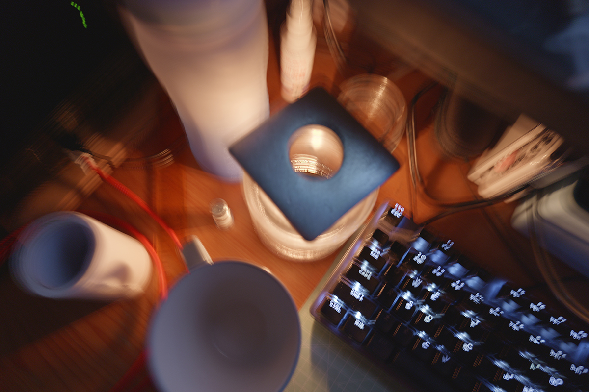

欢迎来到我的个人网站
这里是我分享技术学习、兴趣爱好和创作作品的空间
关于我

你好！我是woshicby，一名来自哈尔滨工业大学的学生，也是一名热爱编程和技术的开发者。
现有海南大学网络空间安全硕士学位，正在攻读哈尔滨工业大学电子信息博士。
我熟悉Python、HTML、CSS、JavaScript，网页、游戏开发、机器人、无人机、板子啥的都玩一点。
除了编程相关，还略懂摄影、器乐和马拉松。这个网站是我学习和分享各种东西的平台。
欢迎在本代码库提交issue或通过下方的社交链接关注我或与我联系！
我的技能
前端开发
HTML, CSS, JavaScript
后端开发
Python
机器人技术
ROS, 嵌入式开发
摄影
风景摄影, 航拍摄影, 视频后期
音乐
竹笛演奏, 录音, 音频后期
运动
马拉松, 越野跑, 自行车